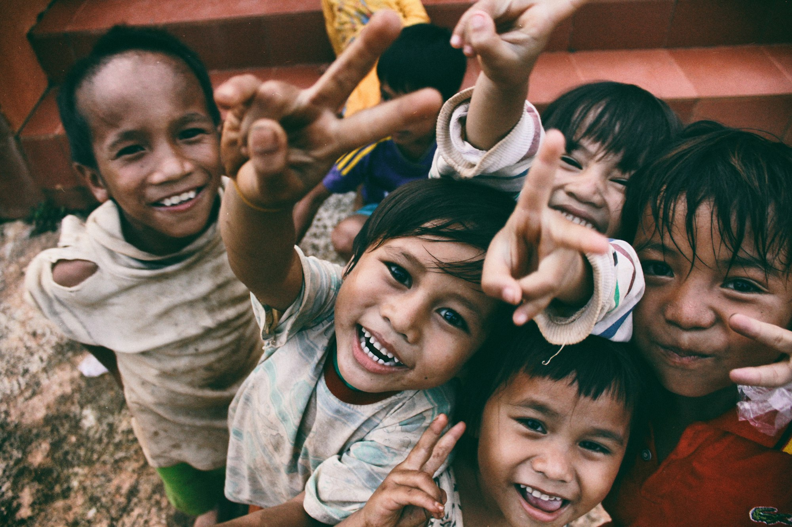
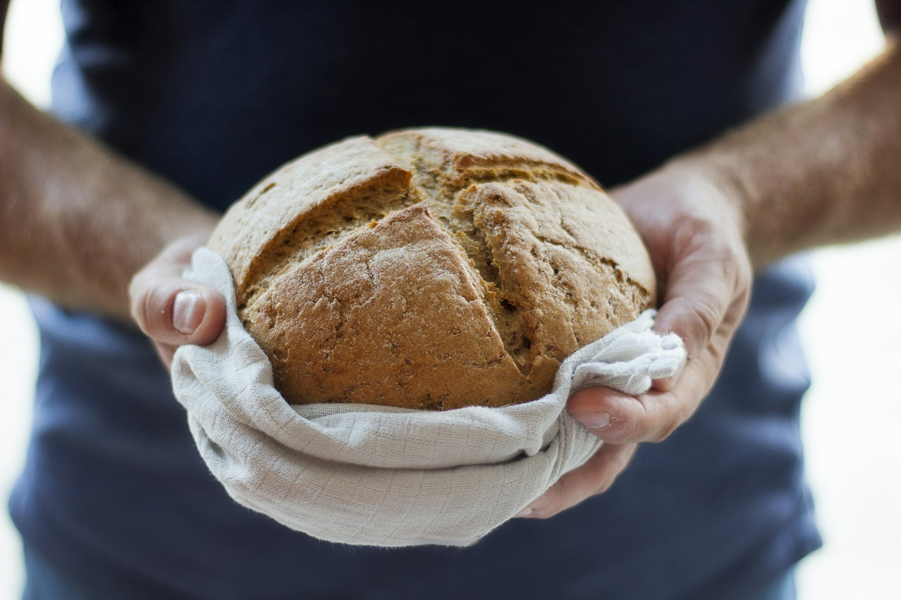

Niyama · The Third Observance · 08
Tapah
Sacrificing service
Penance is not what you give up for yourself. It is the sorrow you shoulder so that someone weaker can be made happy.
The word
Penance has only one purpose.
तपः
Tapah
To practise penance to reach the goal. Not discomfort for its own sake — a ten-rupee gift costs a millionaire nothing, so for him it is not penance at all.
सेवा
The aim
To shoulder the sorrows and miseries of others, to make them happy — to free them from grief and give them comforts. There is no second purpose.
The aspirant is the servant. The served is Brahma — and the service rendered is the sádhaná itself.
The body, not the cheque
Tapah is physical service.
Shudrocita sevá — the labour of the hands — is, in almost every case, what tapah asks of you. So those who are afraid of physical work, or who look down on the labourer, can never become a tápasa. To sit for hours with the sick and give them the relief they need: that is penance.
The one ruin
A hidden motive cancels the whole effort.
Penance
Above selfishness
You serve the sick for hours because they are in pain and need relief. Nothing is expected back. This is tapah, and it dilates the mind toward the Cosmic.
Commerce
The favour, banked
You serve the same person to secure their help in your own bad days. The instant that motive enters, the entire effort of tapah is lost. Not even the least bit of commercial mentality may remain.
Serve with sincerity, or it is not service. The price tag dissolves the penance.
The harder discipline
Tapah without knowledge is misused.
A rich miser comes to you with a tale of woe. Move with pity and relieve him, and you have only made him more miserly — and taught him to deceive the next servant of humanity. Ascertain first whether the person truly needs you. Far more knowledge is required here than in any easier service.

Where your responsibility lies
To the powerful, the rich, the strong — almost none
↓Direct it downward
To the weaker · poorer · less educated · downtrodden
- Banquet not the rich — give food to the starving.
- Send no presents to your superiors — send medicine to the sick.
- Do not flatter the rich; it yields nothing.
Spend your sympathy on the underprivileged and take them into your society. Misjudge the direction, and all your time and labour are spent in vain.
Without consideration of caste or creed
Look upon every person served as the Cosmos itself.
Those who weigh a sufferer's caste, creed, religion or nationality before helping have already defeated their own penance — such a narrow heart cannot serve with sincerity. But serve selflessly, seeing only an expression of the Cosmos, and devotion is aroused in a short time. When love is awakened, what else remains to be achieved?
Win the miser by charity, win the liar by speaking the truth.— The Buddha
Where it leads
Tapah with discrimination changes the course of a life.
Action ungoverned by discrimination is merely goaded by instinct; penance guided by it turns toward emancipation. As the mind dilates in selfless service it readies the sádhaka for Iishvara Prańidhána — the shelter in the Cosmic. You will not reach Brahma by service done blindly. You reach it by serving the right one, in the right way, for no reason but their relief.
A Guide to Human Conduct · after Shrii Shrii Ánandamúrti